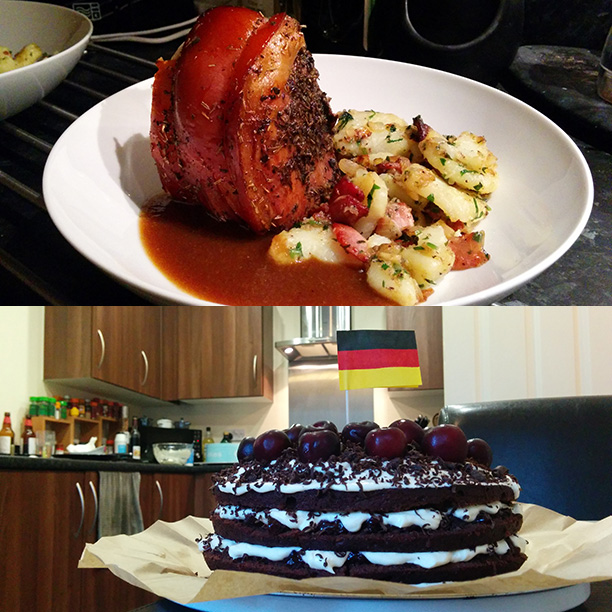
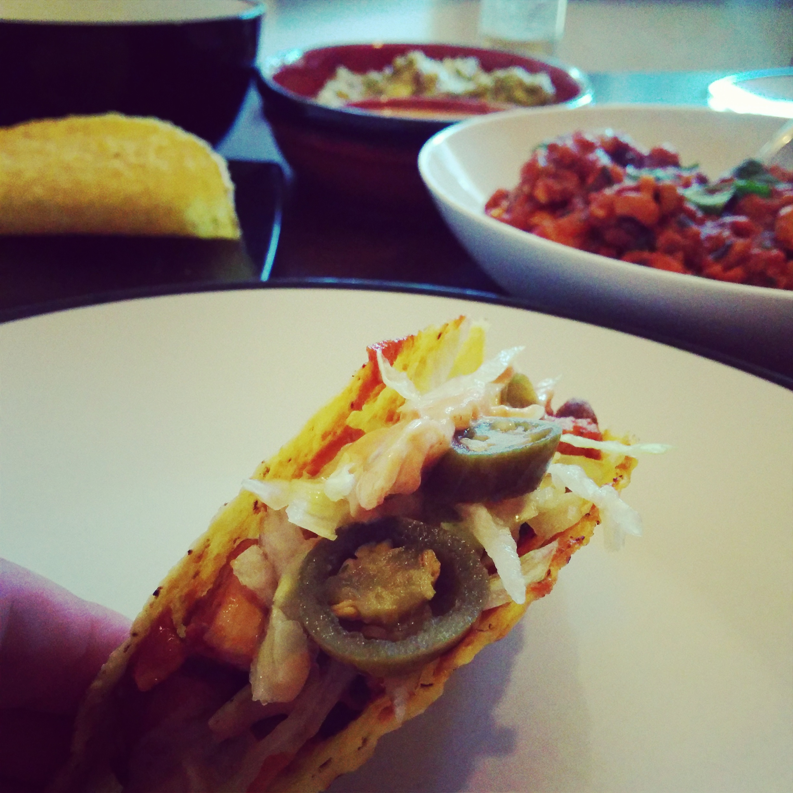
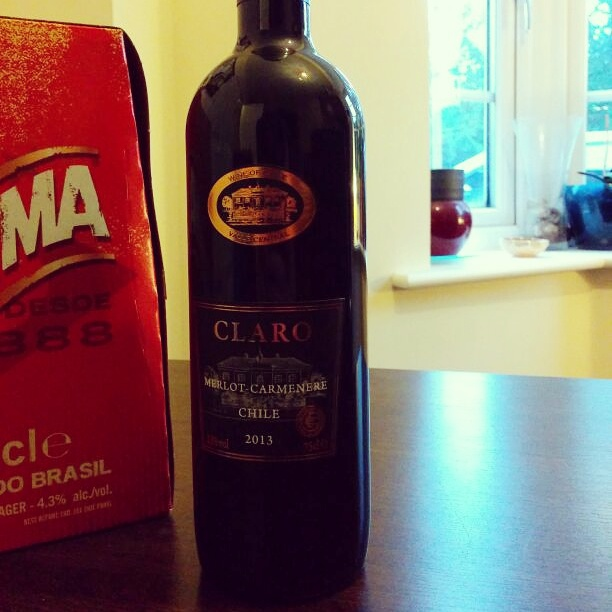
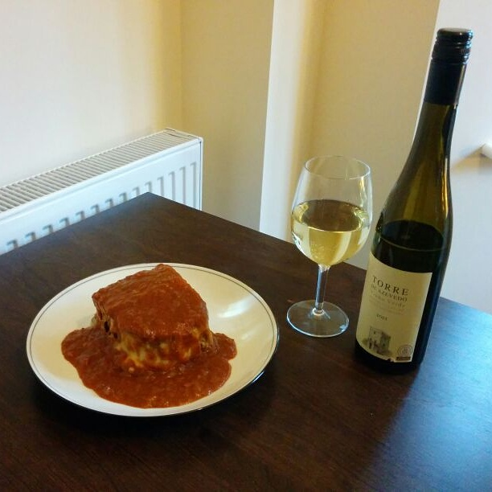

-
Sunday 13 July 2014
 Germany v Argentina
1-0 (AET)WIN
Germany v Argentina
1-0 (AET)WIN(Faux) Schweinshaxe mit bratkartoffeln, und Schwarzwälder Kirschtorte
And finally...
Efforts to buy pork hocks were sadly thwarted, so instead a leg of pork had to be used. Otherwise a mix of this recipe, this one, and this were used. They're all pretty much the same; you get the idea.
Served with bratkartoffeln and gravy made from the pork/beer/veg mush in the bottom of the pan.
And because it's the final, and it's been bloody great, I thought it deserved a ridiculously large cake. So for pudding we have Schwarzwälder Kirschtorte, complete with artisan Post-It note flag.
Thanks, World Cup. It's been brilliant. Until the Euros...
-
Saturday 12 July 2014
 Brazil v Netherlands
0-3LOSE
Brazil v Netherlands
0-3LOSEChurrasco de Porco com Queijo Ralado
A snack meal, due having been sat grazing on a massive picnic in a park all day. Recipe
Served with a dipping sauce made from the remainder of the beer marinade.
-
Friday 11 July 2014
No match played :( -
Thursday 10 July 2014
No match played :( -
Wednesday 9 July 2014
 Netherlands v Argentina
0-0 AET (2-4 on penalties)LOSE
Netherlands v Argentina
0-0 AET (2-4 on penalties)LOSEErwtensoep and bitterballen
A bit of a strange mixture of a meal, this one, especially on a summer evening. Erwtensoep, again adapted to be a bit more speedy, plus a side of Bitterballen made with veal. Unorthodox panko breadcrumbs were used because I happened to have some. Mustard for dipping.
-
Tuesday 8 July 2014
Brazil v Germany
1-7LOSEFeijoada
Served with rice, spring greens, and a ridiculously large portion of goals.
Adapted slightly from this recipe, basically by introducing all sorts of shortcuts to make it possible as a last-minute evening meal rather than an overnight prepped meal.
-
Monday 7 July 2014
No match played :( -
Sunday 6 July 2014
No match played :( -
Saturday 5 July 2014
 Argentina v Belgium
1-0LOSE
Argentina v Belgium
1-0LOSELeffe in a field
Pre-planned Leffe, due to the limited cuisine of a Silverstone campsite.
-
Friday 4 July 2014
 France v Germany
1-0LOSE
France v Germany
1-0LOSEMoules marinière, & raspberry crème brúlée
Moules (recipe), served with giraffe bread and a bottle of Demoiselle de Portillon wine, locally bottled in Flaujagues, near to where my dad lives in France and brought back in my suitcase earlier this year. Along with an Indonesian gong. A story for another day.
Raspberry crème brúlée (recipe) because yay fire and tools!
-
Thursday 3 July 2014
No match played :( -
Wednesday 2 July 2014
No match played :( -
Tuesday 1 July 2014
 Argentina v Switzerland
1-0 AETWIN
Argentina v Switzerland
1-0 AETWINSteak with chimichurri sauce
Steak was 'fed' with smoked paprika and salt dissolved in warm water. Served with a salad made mainly of leftovers (cucumber, red onion, watercress, crispy chorizo, goats cheese), and an Argentinian Malbec.
-
Monday 30 June 2014
Germany v Algeria
2-1 AETWINCurrywurst with potato salad and watercress
Non-creamy potato salad with onions, bacon, and a kind of mustard vinaigrette sauce.
-
Sunday 29 June 2014
 Netherlands v Mexico
2-1LOSE
Netherlands v Mexico
2-1LOSEOpen chicken and bean tacos, with dips
Chicken and bean mix with lettuce in tacos, chipotle lime yoghurt, guacamole, Sol beer.
-
Saturday 28 June 2014
 Brazil v Chile
1-1 (3-2 on penalties)LOSE
Brazil v Chile
1-1 (3-2 on penalties)LOSEChilean Merlot
Another batchelor meal. Result potentially clouded by ordering a 'Samba' pizza for takeaway, plus the Brahma beers.
-
Friday 27 June 2014
No match played :( -
Thursday 26 June 2014
 Portugal v Ghana
2-1WIN
Portugal v Ghana
2-1WINFrancesinha
Horrific batchelor meal for one back at home whilst I was in Brighton for Responsive Day Out 2.
Recipe was apparently a mix of recipe 1, recipe 2 and recipe 3. I cannot be held responsible for any resulting heart attacks.
Accompanied by Torre de Azevedo vinho verde.
-
Wednesday 25 June 2014
 Bosnia and Herzegovina v Iran
3-1LOSE
Bosnia and Herzegovina v Iran
3-1LOSEJoojeh kabab, dolmeh-yeh felfel and borani esfanaaj
This was also an exceptionally tasty meal, though the Dolmeh-yeh mix would be better on its own as the peppers diluted the flavour somewhat.
Dolmeh-yeh Felfel (peppers stuffed with beef mince and rice)
-
Tuesday 24 June 2014
 Greece v Ivory Coast
2-1LOSE
Greece v Ivory Coast
2-1LOSEMafé
Mafé recipe, served with plain boiled rice.
-
Monday 23 June 2014
Netherlands v Chile
2-0WINTongfilets met stamppot en asperges
Sole inspiration from Sole with Hollandaise sauce
Dutch apple cake for pudding. Not homemade.
-
Sunday 22 June 2014
 USA v Portugal
2-2DRAW
USA v Portugal
2-2DRAWMEAT & BEER
Once again, social plans got in the way. Claiming meat and beer as American.
-
Saturday 21 June 2014
Argentina v Iran
1-0WINMalbec
Got asked out for dinner, which meant this was the backup.
-
Friday 20 June 2014
 Italy v Costa Rica
0-1LOSE
Italy v Costa Rica
0-1LOSEHand-made ravioli
Ravioli with a chicken/pork/salsiccia/parma ham filling, cream and pepper sauce, parsley, and samphire because I like samphire.
Birra Moretti, Pinot Grigio, Peroni.
-
Thursday 19 June 2014
 Japan v Greece
0-0DRAW
Japan v Greece
0-0DRAWLamb kebabs, tzatziki, griddled halloumi, semi-Greek salad
Not a typical greek salad because raw tomatoes are bad and wrong. What you may mistake for them are actually leftover peppers from a previous meal.
-
Wednesday 18 June 2014
 Spain v Chile
0-2LOSE
Spain v Chile
0-2LOSEChorizo rolls
Griddled chorizo sausages, rocket, piquanté peppers inside a garlic toasted roll. Rioja.
-
Tuesday 17 June 2014
 Russia v South Korea
1-1DRAW
Russia v South Korea
1-1DRAWSpicy pork & rice
Robert forgot the lettuce for the pork so we had to improvise.
-
Monday 16 June 2014
Germany v Portugal
4-0WINSpätzle mit rouladen
Spatzle recipe from Spatzle with chicken
Rouladen recipe from German Rouladen
-
Sunday 15 June 2014
Switzerland v Ecuador2-1LOSECarne Colorada, rice, cucumber & red onion salad
This is quite possibly my favourite of all of the meals to date. Carne Colorada recipe
-
Saturday 14 June 2014
 Ivory Coast v Japan
2-1LOSE
Ivory Coast v Japan
2-1LOSETori karaage, chashu, sashimi
Salmon from the fishmonger at The Food Company in Colchester.
Chashu recipe from Japanese Chashu
-
Friday 13 June 2014
Mexico v Cameroon
1-0WINEnchiladas, chilaquiles, mojitos
Yeah so mojitos aren't necessarily Mexican, but I drank a lot of them when I went there.
-
Thursday 12 June 2014
Brazil v Croatia
3-1WINMoqueca and caipirinhas
Moqueca with monkfish and prawns.
Recipe was a mix of these: